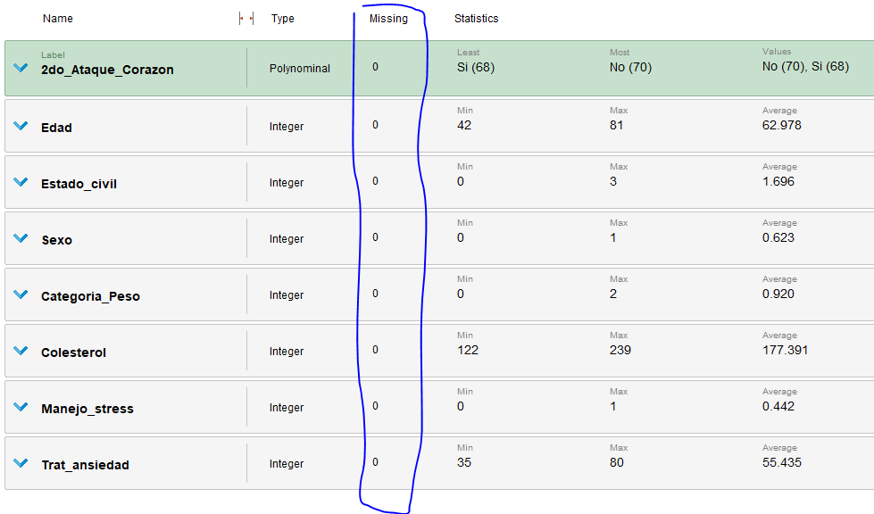

Second heart attack prediction
Training used data: data cardiology training set
Test used data: data cardiology test set
This data set consists of information from
patients:
In the first place, following the CRISP-DM model, we proceed to understand the area of study which refers to measurements of different variables
of cardiological patients. The cardiologist wants to have a system that allows him infer from observed patient data whether
there is a risk of suffering a new heart attack or not. It has historical data of patients and variables
measures that are scientifically used as proxy indicators for predict coronary heart disease.
The doctor has in his registry with historical information of patients who suffered a heart attack
and therefore there is data that it already has labeled because the patients died (already
confirm the possibility of suffering a new heart attack or not). Therefore we are faced with a problem
supervised.
On the other hand, we want to determine a classification of patients into two groups, those who
they are at risk of having a 2nd heart attack and those that don't, so we are facing a classification problem.
We will first proceed to the understanding of the data, we observe the measured attributes and their
meaning:
|
Attribute |
Type |
Range |
|---|---|---|
| Civil status: Values: 0 = single; 1 = married, 2 = divorced and 3 = widower. | Categorical | 0-3 |
Sex: Values: 0 = female; 1= male. |
Categorical - dummy | 0-1 |
Category_Weight: Values: 0 = normal; 1 = overweight; 2 = obese. |
Categorical in numbers | 0-2 |
Cholesterol: cholesterol level of the person, as recorded in the time of treatment indicated when your most recent heart attack. |
Continuous | 122 - 239 |
Handling_stress: Indicates if the patient has previously participated in courses stress management: 0 = no; 1 = yes. |
Categorical - dummy | 0-1 |
Trat_anxiety: Attribute that takes values of type integer between 0 and 100 indicative of each person's natural stress level and ability to handle it. |
Categorical understood as continuous | 35-80 |
Regarding the Trat_anxiety variable, it results from a test applied to the
patient after suffering 1st heart attack,
Each patient was administered a standard natural anxiety test.
The values are tabulated in increments of 5. A value of 0 would indicate that the person never feels anxiety,
pressure or stress in any situation, while a value of 100 would indicate that the person lives in a continuous state of overload and unable to cope with their situation.
The 2nd_Attack_Heart attribute exists only in the training dataset. It is the variable
target or prediction (“label” in RapidMiner).
In the training dataset, this attribute contains "Yes" for those individuals who have suffered a second
heart attack, and "No" otherwise.
Once the attributes are analyzed, the factors that can modify any model are studied in more detail, specially
their ranges, missing values and outliers.
We see below the summary of statistics offered by RapidMiner:

As can be seen in this image, the 0s indicate that there are no missing attributes,
the ranges do not denote abnormal values (outliers) in fact the averages and deviations of each column are
find enough adjusted to average.
The possible correlations that may exist between them are observed in the case of applying algorithms such as
Logistic Regression or Sensitive Naive Bayes
to the correlations between the variables.
For example, possible high correlations between stress management and anxiety treatment could be identified
and there are also studies that link cholesterol levels with stress factors as well as with the sex of the
person.
For the data of our data set, however, there do not appear to be significant correlations:

The highest record is observed in age and anxiety treatment, as well as weight and cholesterol category with
anxiety treatment, but they are low non-significant values that justify a removal of the attribute from the model.
If we apply a principal components analysis (since all our variables are numerical we can do it
easily) we observe the following table of eigenvalues:
It is observed that the first two main components explain 97.7% of the variance of the model, if we look for
within the eigenvectors:
It is observed that the first component has a very high cholesterol weight, which is logical with the recommendations
usual medical to control this risk factor.
The second component has a great weight of the anxiety treatment variable in a negative way, which it would not have
a lot of logic to simple view given that it would indicate higher anxiety scores in the test lower risk of suffering a second attack, but
in these cases is when the existence of possible correlated variables must be understood, that is, it could establish the
hypothesis that more anxious people tend to discharge this energy by doing, for example, exercise which would be good for
health and it would be correlated with this variable.
On the other hand, the second attribute that makes up the second main component is Age, negatively, although in
this case the weight importance is reduced.
The proportion of the accumulated variance by principal components is observed in the following image:
Something important to do is the normalization of the data so that the ranges of variation of the same are not
very dissimilar especially since algorithms like LDA or Naive Bayes assume normal distributions.
In the models of rapid miner the operators of SVM, Logistic Regression offer to carry out the standardization as
adjustable node parameter.
Before deciding which operator to use, we are going to observe with a ROC Curve the performance of the different
models.
In the reference problem we are interested in a good prediction of the True Positive even if there is False
Positive since it would not have
a detriment to the patient taking care of himself, exercising, eating healthy. Likewise, as in any model, the ideal is that
FP = 0.
In this case, as it is not used for a specific diagnosis (such as cancer cases) but to have the information to carry out more frequent checks and
emphasis on patient care.
We observe the ROC curve obtained by testing the Random Forest, SVM, Logistic Regression and Naive Bayes models:

As seen, Random Forest presents a better performance for the TPs at the beginning of the model, then they all stabilize
presenting good final performances.
We will measure the performance of these four methods and observe the results using the cross-validation node
with 10 folds and a random sampling of the data used for training and validation.
Within the cross validation, the four models are applied and their performance is measured.
The following performance is obtained for the models:
LOGISTIC REGRESSION
SVM
NAIVE BAYES
RANDOM FOREST
In relation to what is observed with the ROC curve, the model that presents the best performance is Random Forest, with 97.14%
precision.
Followed by Logistics Regression 92.03%, Naive Bayes: 88.35% and lastly SVM 85.55%.
Therefore, applying Random Forest to the model with 50 trees and a maximum depth of 5 (after testing various
parameters)
97.86% confidence is obtained:
And the predictions on the test data:

Which indicates that for example example 1 is a prediction of No with a confidence of 99.5%, while example 2 a
Yes prediction with a 99.7% confidence.
Finally, the model yields the following trees from among the 50 elaborated:
Tree 1
Tree 2

Given that 50 trees may be excessive for understanding the model (one of the strengths of the
trees decision is its simplicity to be interpreted), I reduced the number of trees to 5 obtaining a
performance of 95.71%, that is, a decrease of more than 2 percentage points, in this case it remains to evaluate the
investigator than to use the model the trade-off between model comprehensibility and accuracy.